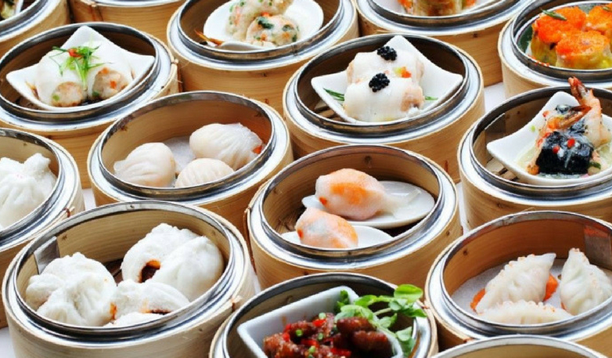

| Dim Sum（点心） |
|  |
| Dim Sum is a large range of small dishes that people enjoy in restaurants for breakfast and lunch in Guangdong, China. People in Guangzhou enjoy Dim Sum with tea, so they call it yum cha (drink tea) when they go to have Dim Sum. Dim Sum (点心) in English means "touching heart", the term used to designate the small dishes that accompanied the tea drinking. |